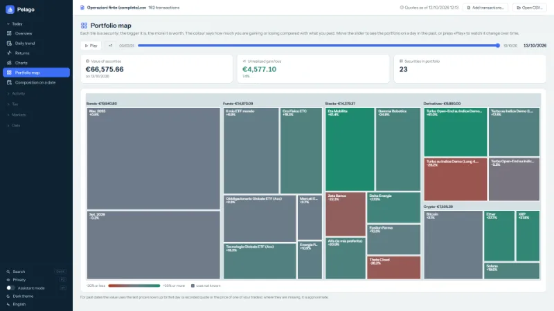
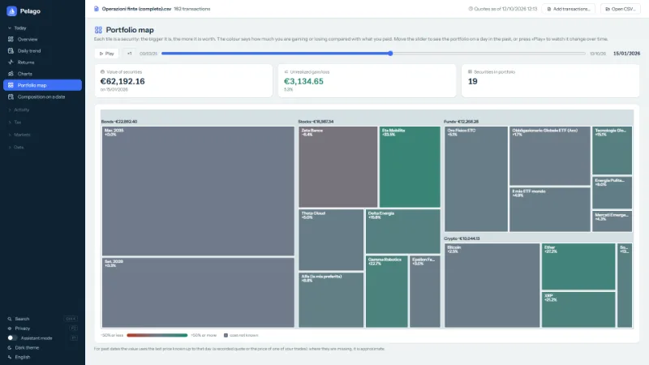
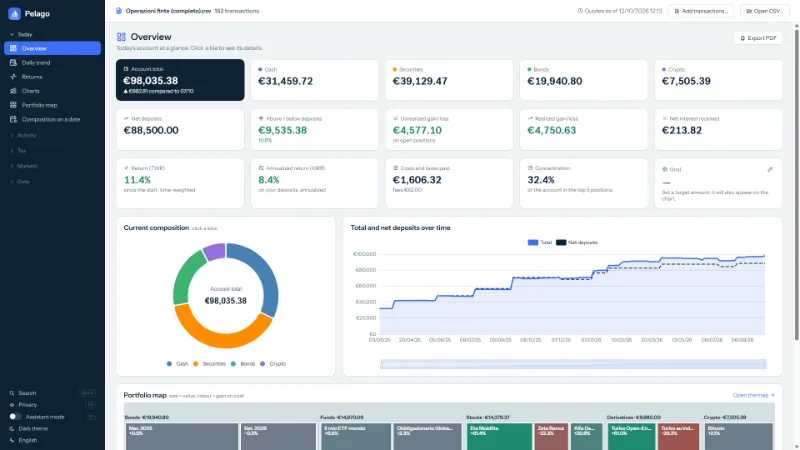
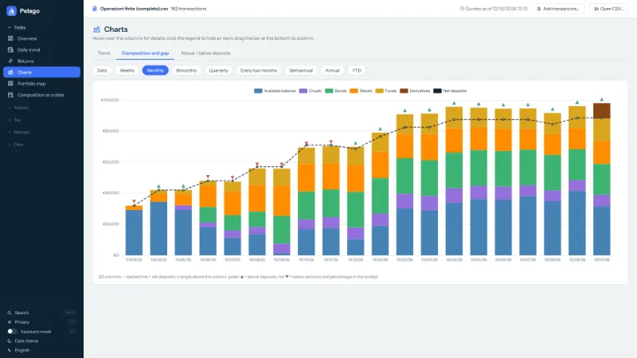
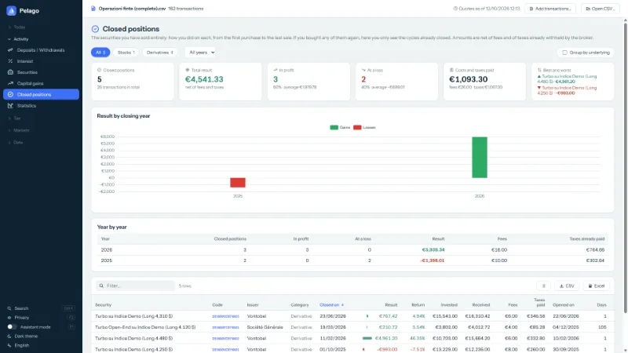
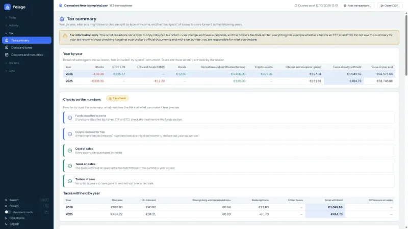
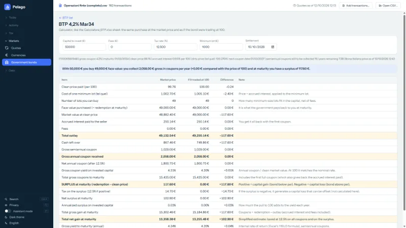
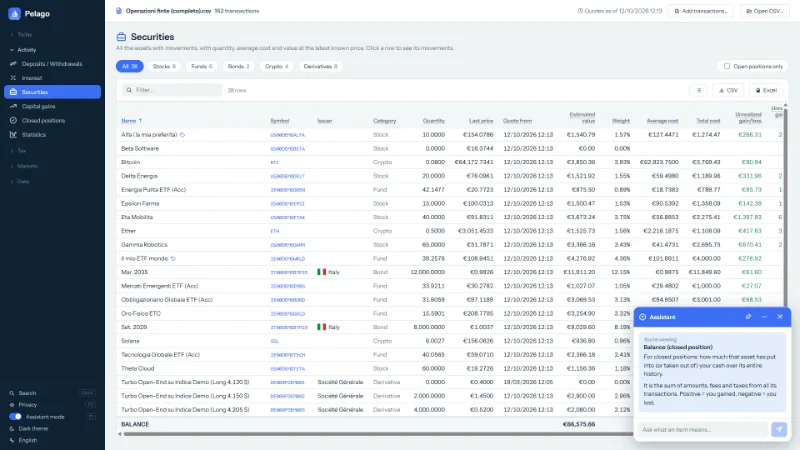
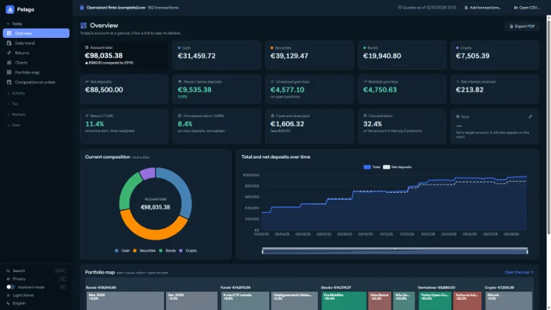

How has your portfolio changed over time?
The Trade Republic CSV file doesn't tell you. Pelago does: a colored tile map of your portfolio, with a slider to go back to any day in the past.
Free, no ads, free software. Everything stays on your PC.
What it does
One CSV file, many ways to read it. The screenshots show an example account with invented data.
-

Portfolio map
One tile per holding: the bigger, the more it is worth; the color tells you whether you are up or down against cost.
-

Time slider
Pick a day in the past, or press “Play” and watch holdings appear, grow and disappear.
-

Overview
Total, categories, deposits, returns and costs of the account, at a glance.
-

Charts
What was in the account, month by month, and whether you were above or below your deposits.
-

Closed positions
How much you made or lost on each holding you sold, net of fees and taxes already withheld.
-

Tax summary
An informational summary, year by year. These are estimates: they do not replace your broker's documents or a tax adviser.
-

BTPs and government bonds
For Italy, the list of fixed-rate BTPs: pick one and work out how many you can buy, the coupons and the surplus at maturity.
-

Assistant mode
Hover a column or a number: Pelago explains what it is and how it is calculated.
-

Five languages, light and dark theme
Italian, English, French, German and Spanish. Your CSV is never modified; a local backup is one click away.


Anachronistic? Yes, on purpose.
Yes, it is a Windows program. In 2026 that looks like a choice from another era, and in a way it is: but not out of nostalgia. It is the simplest way to keep your data where it belongs.
Nobody holds your data, because there is nobody to give it to.
No server, no account, no “cloud”: your CSV stays on your disk, where you saved it.
The file you download is always the same, and you can verify it.
A web page can change at every visit without you knowing.
pelago.exehas a public SHA-256 fingerprint and the code is open: what you checked is what runs, even a year from now, even offline.Your PC asks for the prices, not an intermediary.
Many price services do not accept requests from web pages (Borsa Italiana, for example): a website would have to go through its own server, which would see which securities you hold. The program asks for them directly from your home and sends only security codes and dates.
It works without us, too.
No subscription, no service that can shut down: if the site disappeared tomorrow, the program and your data would still be there.
The price of this choice
It only runs on Windows, you have to download a file (that is why there is a way to verify it), Windows shows a warning until the file is signed, and updates are manual. To try it without downloading anything there is the demo in the browser, with invented data.
How to use it
Download the CSV
From your Trade Republic account, export the CSV file of your transactions.
Download Pelago
Get
pelago.exefrom the latest version and run it: it is a single file, with no installation.Open the CSV
Press “Open CSV” and choose the file. Your CSV is never modified.
You need 64-bit Windows 10 or 11 and the WebView2 Runtime, already included in Windows 11 and in most up-to-date Windows 10 installations.
Want to try it without your own data?
Start Pelago without opening any file and press “Try an example account”: a second window opens with an invented account (about 160 transactions), in a temporary folder that disappears when you close it. If you prefer, download the example CSV and open it with “Open CSV”.
What leaves your PC
- Your CSV and your data stay on your PC. Pelago never asks for a login or a password and never connects to your account.
- For prices it queries public services (Yahoo Finance, CoinGecko, ECB, Borsa Italiana and a few others) and sends only security codes and dates: never amounts, quantities or personal data.
- Derivative prices (Vontobel and Société Générale) are off by default: you turn them on yourself, from the Quotes page.
- The code is public: you can check for yourself that there is nothing else.
Verify it yourself
- The code is public (GPL-3.0): you can read it, build it yourself and see what it does.
-
Every release lists the SHA-256 fingerprint of
pelago.exe. After downloading, in PowerShell:Get-FileHash .\pelago.exe -Algorithm SHA256Compare the result with the
pelago.exe.sha256file of the same release. - The executable is not digitally signed: the first time, Windows may show the SmartScreen warning (“Windows protected your PC”). We do not hide it: if you prefer, build Pelago from source.
Frequently asked questions
Is Pelago official, or connected to Trade Republic?
No. It is a personal, unofficial project: it is not affiliated with or approved by Trade Republic, and it has no access to your account.
Why isn't it a website?
Because this way your data stays on your PC and the program you verified is always the same one. The full reasoning is here.
Can I try it without downloading anything?
Yes: the demo in the browser uses an account with invented data and makes no requests to the internet.
How much does it cost?
Nothing. It is free, with no ads and not for profit: free software (GPL-3.0).
Are the numbers accurate?
They are estimates calculated from the file: they are not an official balance. Prices come from public services and may be late or missing.
Can I use it for my tax return?
Not as your only source. The tax summaries are informational estimates, using simplified formulas: check them against your broker's official documents and with a tax adviser. You are responsible for what you declare.
Does it work with other brokers, or on Mac and Linux?
It is designed for the Trade Republic CSV: there is no guarantee with files from other brokers. For now it only runs on 64-bit Windows 10/11.
How do I uninstall it?
Delete pelago.exe: it does not write to the registry and does not start with the computer. To remove the data too, delete the folder %LOCALAPPDATA%\Pelago and, if you turned them on, the backups in Documents\Pelago backup.
I found a mistake or have an idea: how do I report it?
Open an issue on GitHub or write to pelago_claude@gmail.com. Never attach your real CSV: it contains all your transactions.
Warnings and liability
Pelago calculates values, returns and tax summaries from the CSV file you give it, using simplified formulas: they are estimates, may contain errors or fail to account for every case (different formats, corporate actions, tax regime, foreign taxes). They are not an official balance, nor financial, legal or tax advice, and they do not replace your broker's official documents or a professional: always check the numbers before using them, in particular for your tax return. Pelago is provided “as is”, without warranties of any kind (GPL-3.0, sections 15-16): to the extent permitted by law, the author is not liable for any damage arising from the use of the program or its results.